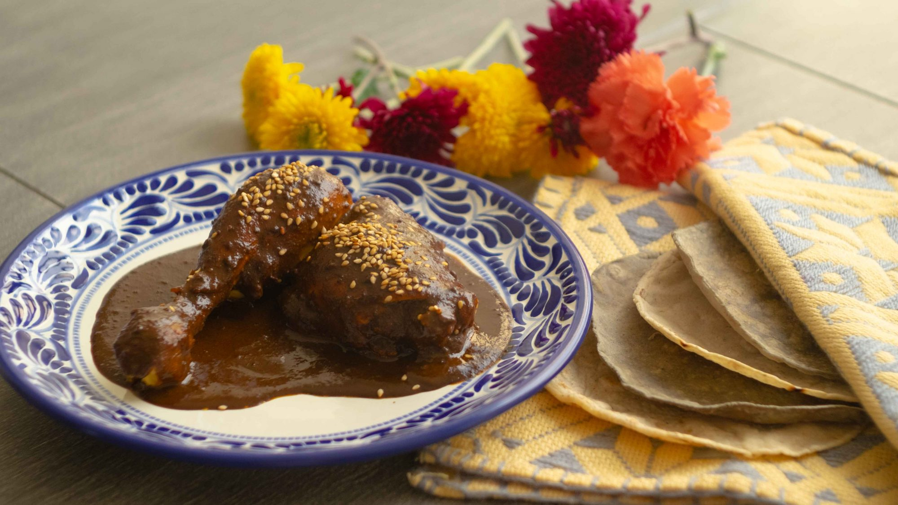

Mole Poblano

Description
Mole is a traditional mexican food, specifically thats the name of the sauce. The word mole comes from the Náhuatl word “milli” or “molli” which means sauce or “concoction”.
One legend states that mole came from pre-hispanic times and that Aztec king, Moctezuma, thinking the conquistadors were gods, served mole to Cortez at a banquet to receive them.
Ingredients
For the chicken:
- 1 Large chicken cut up in pieces
- About 8 cups of water
- 1 Small onion cut up in pieces
- 3 Garlic cloves
- Salt to taste
For the sauce:
- 6 Mulato peppers
- 4 Ancho peppers
- 6 Pasilla peppers
- 1 Tablespoon of reserved pepper seeds
- 6 Whole cloves
- ½ Teaspoon black peppercorn
- ¼ Teaspoon coriander seeds
- ¼ Teaspoonanises seeds
- ¾ Cup sesame seeds
- ¾ Inch of mexican cinnamon stick
- ½ Cup of raisins
- ⅓ Cup unskinned almonds
- ⅓ Cup peanuts
- 1 Corn tortilla
- 3 Small slices of french bread
- ⅓ Cup of raw pumpkin seeds
- ½ Small white onion sliced
- 2 Medium roasted tomatoes
- 3 Garlic gloves roasted
- ½ Large ripe dark-skinned plantain peeled, thickly sliced
- 1 Tablet of Mexican drinking Chocolate* About 3.1 ounces.
- The reserved broth from the cooked chicken.
- ½ Cup of oil or lard to fry the ingredients
- Salt to taste
Instructions
For the chicken:
- Combine all ingredients in large pot. Bring to boil.
- Reduce heat, cover, and simmer until chicken is just cooked through, skimming foam, about 35 minutes.
- Transfer chicken to bowl; cover and chill.
- Reserve broth in a pot.
For the sauce:
- Get all the ingredients ready according to the list.
- Prepare the peppers. Make sure to clean the dry peppers with a wet cloth and cut the peppers to flatten them for an even toasting.
- Have a large pot ready with simmering chicken broth or water to soak all the ingredients after toasting or frying. They will get softer and easier to grind this way.
- In a skillet toast the dry peppers a few at a time, on both sides, pressing them down as you turn them, until the inside flesh turns tobacco brown. This takes a few seconds, take care not to let them burn. Place the peppers and the chocolate in the bowl with the broth to soak. Keep toasting the rest of the peppers and placing them in the broth.
- Meanwhile, toast separately the reserved peppers seeds, the coriander seeds, the anise seeds and sesame seeds. Set them aside to cool.
- Grind in an electric coffee/spice grinder as finely as possible. Cloves, peppercorns, cinnamon, and all the toasted ingredients except the sesame seeds. In case you do not have a grinder, but you have a professional blender skip this step and place the spices and seeds on the pot with the rest of the ingredients to be grinded in the blender.
- Now, add a small portion of the lard or vegetable oil to a skillet and begin frying the following ingredients separately draining any excess fat after frying: the raisins until plump up, the almonds until well browned, the pumpkin seeds until they swell.
- Every ingredient will be added to the pot with the chicken broth. You can roast the tomatoes and garlic cloves while frying the rest of the ingredients. Fry the onions until golden brown and place in the bowl.
- Fry the tortilla and bread until crisp. Only add a little more lard at a time or it will be absorbed, specially by the tortilla and bread.
- Add plantain and sauté until golden, about 3 minutes. Using slotted spoon, drain excess fat and transfer to bowl. Make sure to use a ripe plantain.
- This is the bowl where all the fried and toasted ingredients were placed and now are ready to go into the blender. It is going to look a little bit messy. Crush the bread and tortilla roughly, chop the tomatoes roasted tomatoes. This will make the grinding process a little bit easier.
- Put ½ cup of the chicken broth into the blender jar, don't forget to add peeled garlic. Gradually add the spice mixture and blend well; then add another ½ cup of broth and gradually blend the fried ingredients to a slightly fine paste. Try not to add more liquid (unless your blender motor is heating or smoking) but constantly release the blades with a rubber spatula. You will have to do this step in 2 or 3 batches until everything has been pureed. If the end results are still coarse, pass the whole mixture through a strainer.
- In a large skillet over medium heat, reheat the sauce, scraping the bottom of the pan very often to avoid sticking. Season with salt.
- Continue frying until the mixture is very thick, about 8 minutes, and stir. Add more broth as needed to desire thickness and continue cooking, the mixture should be bubbling and splattering—for about 25 minutes. By now pools of oil should be forming on the surface.
- Add cooked chicken to hot mole; simmer until chicken is heated through, about 10 minutes. To serve, place a piece of chicken on a warm plate. Spoon on plenty of the mole sauce; sprinkle with sesame seeds. In Mexico it is usually serve with white rice and a lot of warm tortillas.